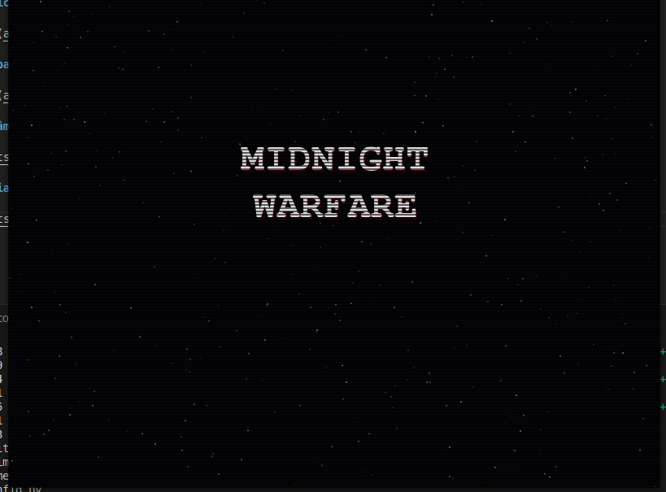
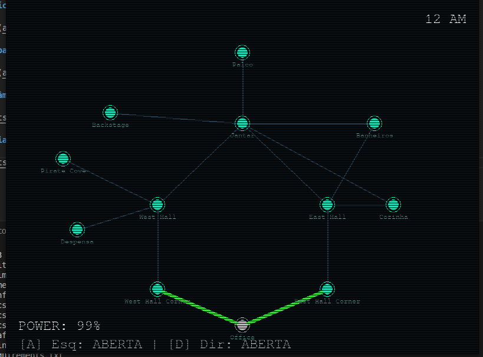
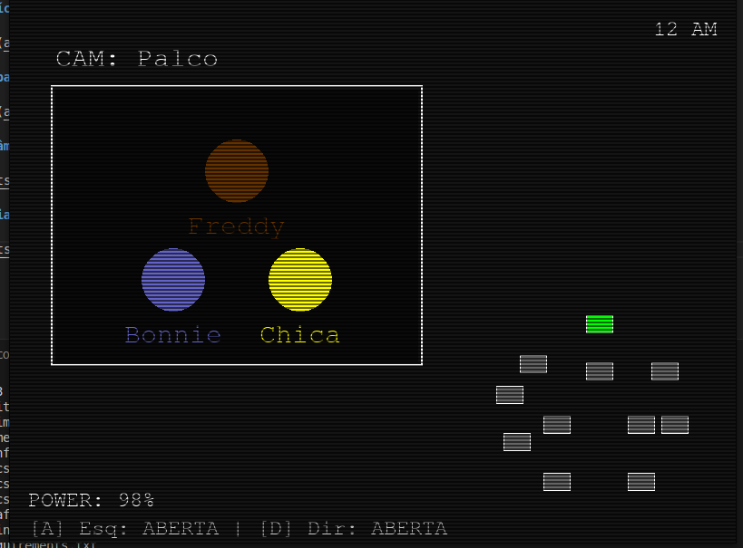
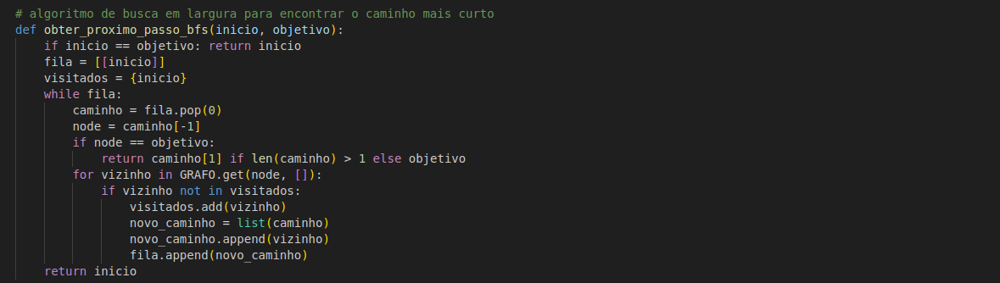
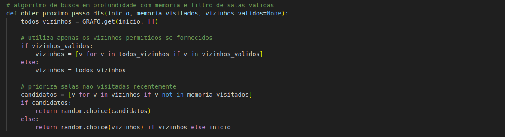
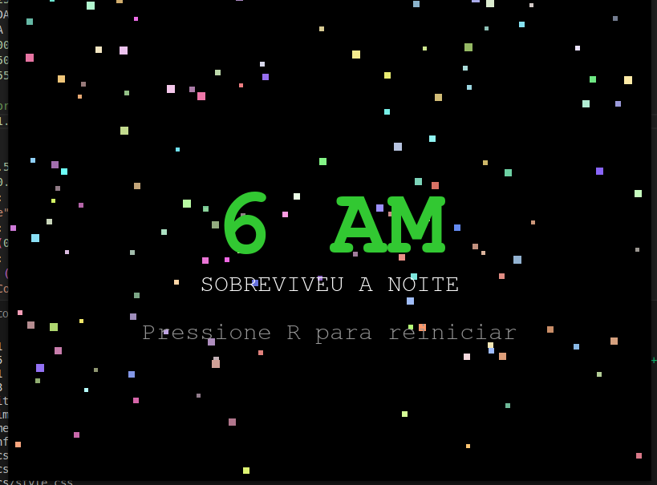

Aplicação prática de teoria dos grafos em um jogo de terror inspirado em Five Nights At Freddy's.
O ambiente do jogo é modelado como um Grafo Não-Direcionado, utilizando listas de adjacência para representar as conexões entre as salas e os corredores.
Implementação de Busca em Largura (BFS) para cálculo de rotas ótimas e Busca em Profundidade (DFS) para simulação de exploração de ambiente por IAs.
A lógica de decisão é executada a cada atualização de quadro, sendo responsivo tempo real com complexidade de busca linear em relação às arestas do grafo.
| DESENVOLVEDOR | Artur Mendonça Arruda |
| MATRÍCULA | 23/1033737 |
| DESENVOLVEDOR | Lucas Mendonça Arruda |
| MATRÍCULA | 23/1035464 |
Python 3 | Pygame
Projeto desenvolvido para a disciplina de Estrutura de Dados II, com foco na aplicação de conceitos de grafos.
Cada oponente utiliza um algoritmo distinto para navegar pelo grafo do mapa.
Utiliza Busca em Largura. O algoritmo garante que ele sempre encontrará o caminho com menor número de arestas até o nó alvo, otimizando sua perseguição.
Implementa Busca em Profundidade limitada ao subgrafo Oeste. Visita nós adjacentes em profundidade antes de retroceder, simulando um padrão de exploração.
Similar ao Bonnie, mas restrita ao subgrafo Leste. O uso de DFS faz com que ela explore extremidades do grafo antes de convergir para o objetivo.
Opera por transição de estados baseada em cooldown. Ignora a busca convencional, realizando travessia direta de arestas pré-definidas quando ativo.
Atua como um Vértice Desconexo. Sua lógica ignora as arestas do grafo, operando via probabilidade estocástica para realizar uma transição imediata ao nó do escritório.
Visualização dos algoritmos e da interface do jogo.






O mapa do jogo é representado computacionalmente como um grafo G(V, E), onde V são as salas e E são os corredores. A escolha da Lista de Adjacência favorece a performance de iteração sobre vizinhos.
O(V + E)
Memória utilizada pela Lista de Adjacência.
O(V + E)
Complexidade temporal para encontrar o caminho ótimo.
O(V + E)
Complexidade temporal para travessia completa do componente.
O(1)
Custo médio para acessar a lista de vizinhos de um vértice.